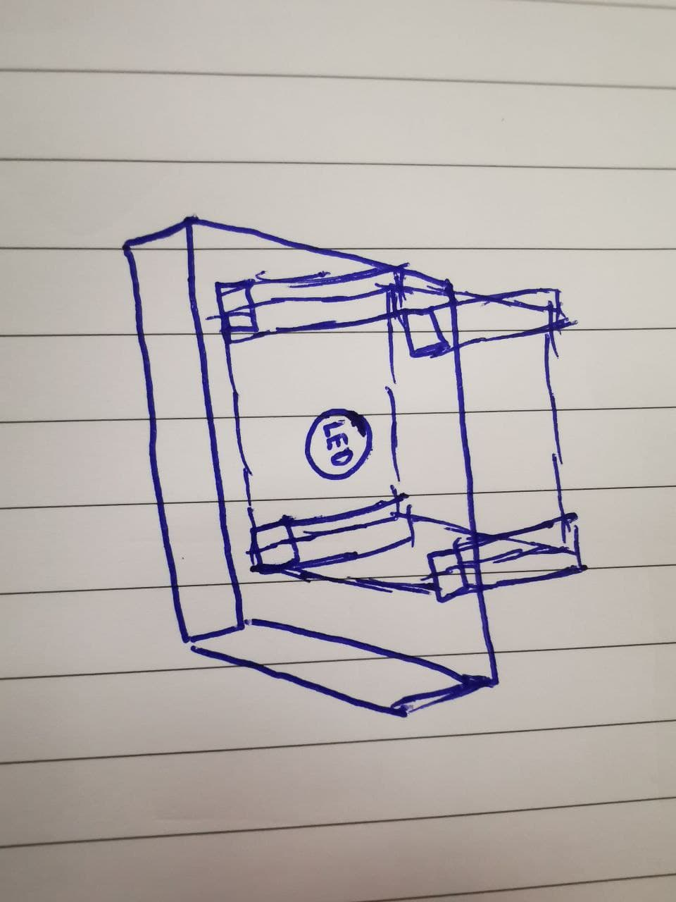
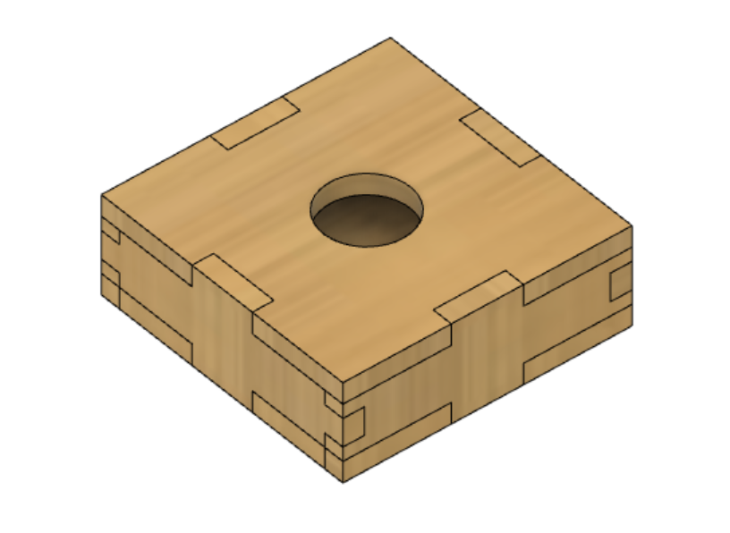

Module Project
For our module project, we have to apply what we have learnt in this module. Hence, i decided to make a lithophane which incorporates most of the technologies and skills that i've learnt.
I got the idea of making a lithophane after searching on the internet and looking at other students projects for references as well as a source of inspiration. As i kept thinking about how i can make this lithophane of mine unique as well as decorative, i realised that i can also make use of the concepts that i've learnt in DFAB 1 to make a CNC cutout of a rectangular box to store my electrical components to act as my base, and this idea eventually led to my first prototype design.
 Since dimension of the base is 20cm x 20cm x 7cm, and the circle at the top has a diameter of 6cm. Assuming the thickness of the CNC wood is 1.5cm. I wanted to create the lithophane design with the height of 15cm by 10 cm.
Mould of rectangle be 5cm x 5cm, with a height of 15cm. With a engrave of 0.5cm of my name.
Engraving of 0.02cm on a 10x10cm board.
Engraving of Zedgod on a 10cm x 10cm surface.